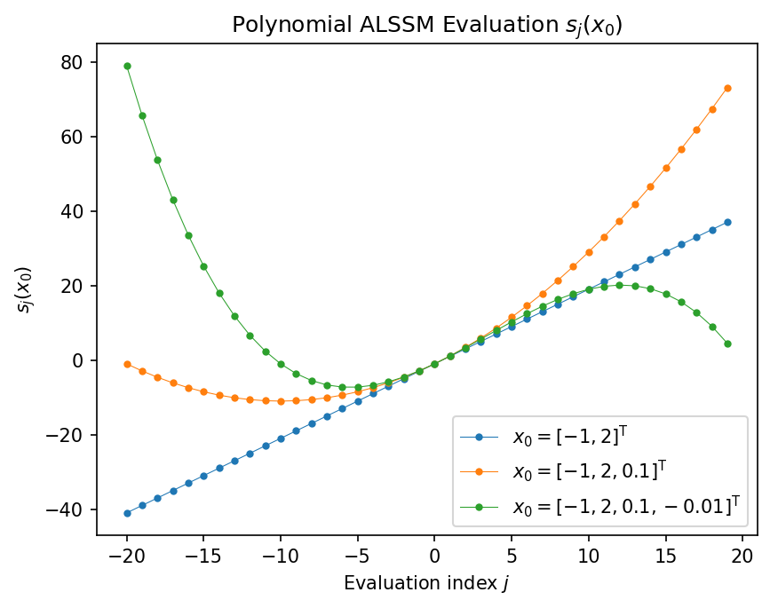
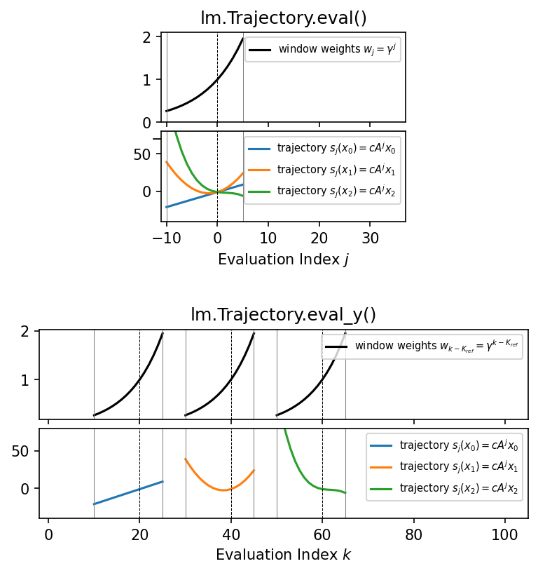
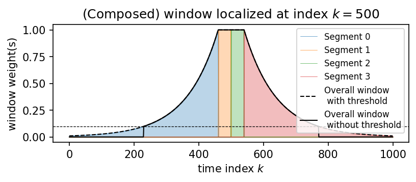
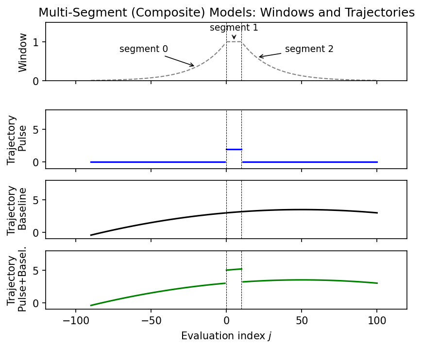
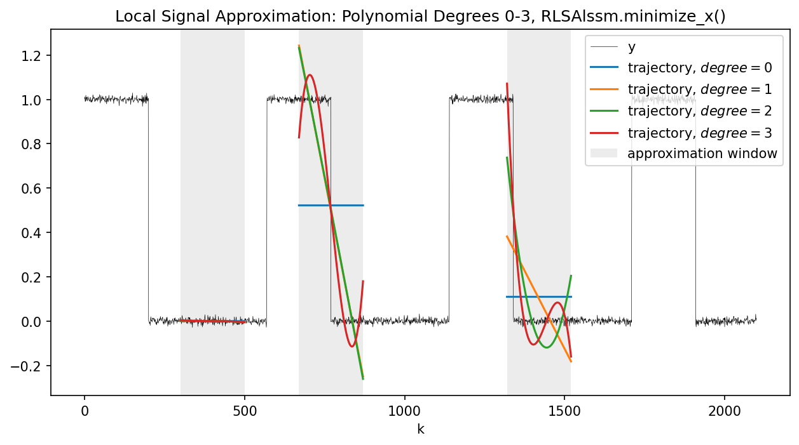
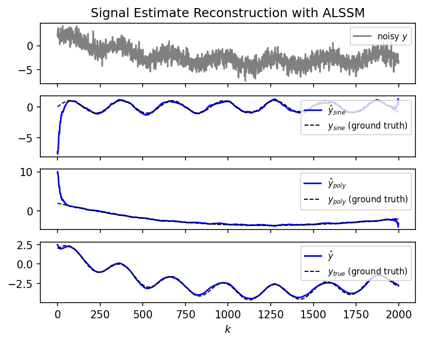

Teaching and Coding Examples
Short, didactic snippets that introduce lmlib's building blocks step by step.
Windowed State Space Filters
Autonomous Linear State Space Models (ALSSMs) and squared-error cost functions built on them.
| No Plot |
Basic ALSSM Coding [code101.0]
Demonstrates how to set up an autonomous linear state space model (ALSSM). Two approaches are shown: 1. Native ALSSM — explicit definition of the state transition matrix A and output matrix C using Alssm. 2. Built-in polynomial ALSSM — using the convenience class AlssmPoly, which constructs the Pascal... |
| No Plot |
Superposition (Stacking) of ALSSMs [code101.1]
Generates two discrete-time autonomous linear state space models and stacks them into a single combined model that produces a two-channel stacked output. dump_tree returns the internal structure of the stacked ALSSM and helps with debugging. Note: replacing AlssmStacked with AlssmSum generates a summed (scalar) output instead of a... |
 |
ALSSM Trajectory [code102.0]
Evaluates an ALSSM over a time range for a given initial state vector. eval_output computes the output sequence s_j(x_0) = C A^j x_0 for a range of evaluation indices j. Three polynomial ALSSMs of degree 1, 2, and 3 are evaluated and plotted together. See also: eval_output |
 |
Single-Segment (CostSegment) Models: Trajectories and Windows [code103.0]
Defines a cost segment consisting of an ALSSM and a left-sided, exponentially decaying window, then visualises the window weights and the resulting signal trajectories for a set of state vectors. Two plot groups are shown: • Upper plots — the window and trajectories in the relative index domain... |
 |
Composed ALSSM Windows (Weighting Window) [code104.0]
Each cost segment in lmlib.statespace.cost is weighted by its own exponential window function. This guide script demonstrates the basic exponentially decaying window of both finite and infinite support, and shows how a more complex symmetric window is built by composing four such segments. The composed window consists of... |
 |
Multi-Segment (Composite) Models: Windows and Trajectories [code105.0]
Defines a CompositeCost combining two ALSSM models (a pulse model and a baseline model) with three segments (left, centre, right), and visualises the resulting windows and trajectories. The mapping matrix F selects which ALSSM is active in each segment: the pulse model covers only the centre segment, while... |
 |
Local Signal Approximation with Increasing Polynomial Degree [code106.0]
Fits local polynomial models of increasing degree to a rectangular test signal using RLSAlssm with the Pascal monomial basis (AlssmPoly), in the spirit of the multi-degree filter sweep in example-ex122.0-polynomial-filters.py. For each degree, the optimal state vector is extracted at three reference positions and the corresponding trajectory is... |
 |
Alternative ALSSM Outputs [code107.0]
Demonstrates different ways to reconstruct the signal estimate from the state vectors returned by minimize_x. A CompositeCost combines a polynomial and a sinusoidal ALSSM. After filtering and minimization, two output methods are compared: • Normal output — all ALSSMs contribute equally (alssm_weights=None). • Weighted output — only the... |
Polynomials Basics
Working with polynomials in vector exponent notation.
Backend
The lmlib.statespace.backend module enables Just-in-Time (JIT) compilation (via the numba package) for time-critical routines, which significantly speeds up filtering applications. The examples below demonstrate its usage.
| No Plot |
Benchmarking State-Space vs. Transfer-Function Backend [code910.0]
Measures the throughput (in mega-samples per second, MS/s) of the RLSAlssm filter for the numpy and lfilter backends on a single-channel signal. The lfilter backend converts the state-space recursion to a cascade of IIR/FIR transfer functions and uses scipy.signal.lfilter, which can be significantly faster for long signals when... |
| No Plot |
Benchmarking State-Space vs. Transfer-Function Backend (ND) [code910.1]
Measures the throughput (in mega-samples per second, MS/s) of the RLSAlssm filter using an NDCompositeCost for the numpy, lfilter, and (if available) jit backends. An NDCompositeCost over a 2-D signal (image) is built using the same separable polynomial basis as in example-ex801.0-Text-Recognition.py. Each backend processes a (K1 x... |
| No Plot |
Benchmarking State-Space vs. Transfer-Function Backend [code911.0]
Measures and compares the throughput (MS/s) of the RLSAlssm filter across the numpy, lfilter, and (if available) jit backends for four configurations: • Single-channel, non-steady-state • Single-channel, steady-state • Multi-channel parallel (M=6), non-steady-state • Multi-channel parallel (M=6), steady-state Results are displayed as a horizontal bar chart. |
| No Plot |
Benchmarking State-Space vs. Transfer-Function Backend for ND Costs [code911.1]
Measures and compares the throughput (MS/s) of the RLSAlssm filter across the numpy, lfilter, and (if available) jit backends for four configurations using a 2-D NDCompositeCost: • Small image (100×100), low poly degree (1) • Small image (100×100), high poly degree (2) • Large image (300×300), low poly... |
| No Plot |
Export of Transfer-Function Coefficients [code912.0]
Shows how to extract the IIR/FIR transfer-function coefficients from an CostSegment and use them to implement the RLS filter directly with scipy.signal.lfilter. The exported coefficients (q_a, q_b, p) encode the boundary FIR numerators (at indices a and b) and the shared IIR denominator p. The helper function filter_direct_form... |